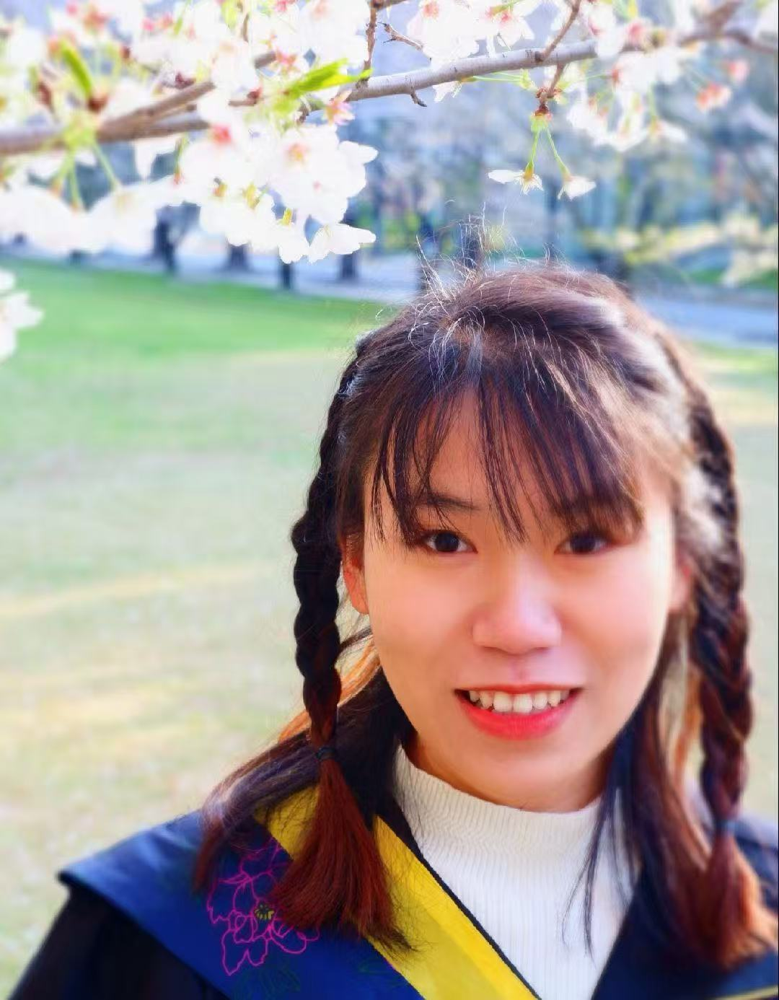
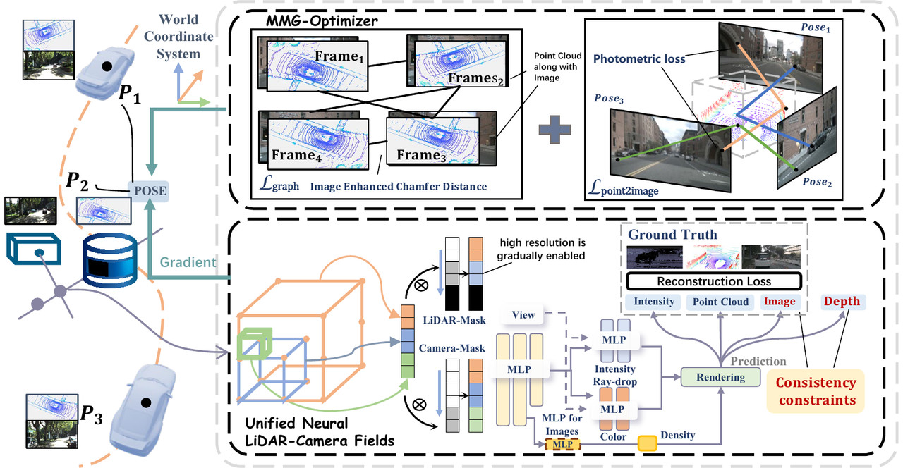
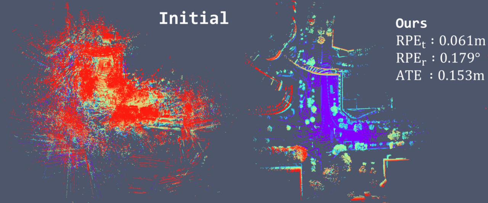
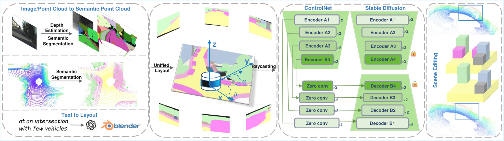

Research Intern ? 51WORLD
Long-sequence driving scene reconstruction and rendering.
Ph.D. Student ? Tongji University

I am a Ph.D. student in Vehicle Engineering at Tongji University, advised by Prof. Guang Chen.
My research focuses on 3D scene reconstruction and generation for autonomous driving, including 3D generation, diffusion models, neural fields, and point cloud registration.
I have been a research intern at Shanghai AI Laboratory and 51WORLD, and previously interned at NIO in battery cloud algorithms and product experience.
I develop methods that turn multi-view images, depth, and point clouds into consistent 3D scenes. Recent work includes feed-forward reconstruction of long driving sequences, pose-free neural fields, and controllable LiDAR generation.

Feed-forward reconstruction and refinement for temporally consistent, long-sequence driving scenes.

A pose-free framework combining LiDAR geometry and camera appearance for large-scale view synthesis.

Trajectory-conditioned 4D video generation with temporal and geometric consistency.

Geometry-guided LiDAR reconstruction with joint neural optimization and pose refinement.

Controllable LiDAR point cloud generation from text, images, and point cloud inputs.
Long-sequence driving scene reconstruction and rendering.
Embodied scene generation, Real2Sim, and VLM-based robotics.
Analyzed driving data and user feedback to support product experience improvements.
Processed battery telemetry with Python and MySQL and supported SOC/SOH analysis.
Intelligent driving and artificial intelligence.
Automotive electronics and intelligence.